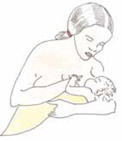

You are aware of these considerations from the Modules on Antenatal Care and Labour and Delivery Care.
In the majority of pregnancies prior to delivery, you will have already started communicating and discussing postnatal care with the mother and other family members. It is during these antenatal visits that you will be able to collect information about the mother, the family and their social conditions, and you will also be able to give them your address and tell them how they can contact you whenever they need your assistance. During the pregnancy you will also have encouraged all mothers to deliver their baby in the Health Post or higher health facility if possible, but in rural Ethiopia over 94% of women will deliver at home. In those cases, you will have advised the family members to call you immediately when labour starts.
If you are present at the delivery, you already know that you should stay with the mother for at least the first six hours after the birth. However if she gave birth without you, visit her as soon as possible, ideally within a few hours and no later than the first day. Before you go to the mother for the first postnatal visit, prepare the equipment and drugs that are essential to provide effective postnatal care. In this study session, you will learn about the equipment, the schedule and aims of the postnatal visits, the detailed steps of necessary preparation before you go, and what you should do when you reach the new mother’s home.